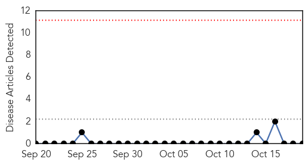
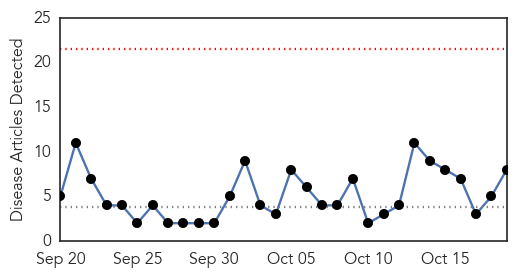
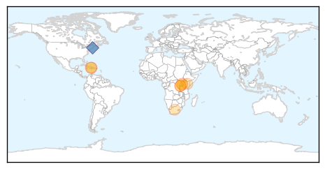
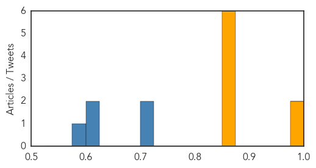

Bubonic Plague
30-Day Web Trend
0 alerts, 0 warnings

30-Day Twitter Trend
0 alerts, 0 warnings

Article Locations


Article Confidences

Top Articles:
-
No articles found for Oct 19, 2015
Top Tweets:
-
No tweets found for Oct 19, 2015
Cholera
30-Day Web Trend
0 alerts, 0 warnings

30-Day Twitter Trend
Article Locations
Article Confidences
Top Articles:
- 0.994
- Haiti's Earthquake Was Devastating, but the Cholera Epidemic Was Worse
- 0.990
- Haitian Refugee Camps, Cholera, Social Media, and Senator Marco Rubio – Dispatches from Haiti – Journal Star – Peoria, IL
- 0.863
- Transform Africa Summit Commences in Kigali
- 0.863
- Red Pepper’s Rugyendo Wins Crans Montana Future Leaders’ Award
- 0.863
- Opinion: Enforcing the Copyright Law is Neo-Luddism and Impossible
- 0.863
- Museveni: We Must Return Uganda Airlines
- 0.863
- DRC Joins East Africa Northern Corridor Integration Initiative
- 0.863
- Barefootlaw Scoops African Legal Innovation Award
Top Tweets:
- 0.718
- RT: 5 yrs ago we started seeing 100s of people die of diarrhea: cholera had arrived in Haiti. Still the largest cholera eme…
- 0.709
- Manifestation devant une base de l pour demander réparations par les victimes de cholera en Haiti (video) https://t.co/92jJ6HK4s3
- 0.621
- RT: Haiti’s Earthquake Was Devastating. The Cholera Epidemic Was Worse. via https://t.co/culc7gwk8F
- 0.621
- RT: Haiti’s Earthquake Was Devastating. The Cholera Epidemic Was Worse. https://t.co/pdVSetMyNh via
- 0.583
- RT: At least 9000 people died of cholera in Haiti. I suspect that it is MUCH more. Maybe double? So many die unaccounted for…